การใช้งานโมดูลแสดงผลแบบ TFT LCD#
▷ TFT LCD#
จอภาพ LCD (Liquid Crystal Display) เป็นอุปกรณ์แสดงผลที่ประกอบด้วยวัสดุหลายชั้น ได้แก่
- แหล่งกำเนิดแสง เช่น LED ที่ให้แสงสว่างจากด้านหลัง (Backlight)
- แผ่นกรองที่เรียกว่า ฟิลเตอร์โพลาไรซ์ (Polarising Filter) เป็นชั้นแรก
- ชั้นวัสดุที่มีผลึกเหลว (Liquid Crystal: LC)
- ฟิลเตอร์กรองแสงโดยแยกตามสี RGB (Color Filters)
- ฟิลเตอร์โพลาไรซ์ชั้นที่สอง ฟิลเตอร์โพลาไรซ์ชั้นแรกและชั้นที่สองจะทำมุมกัน 90 องศา
โดยปรกติ โมเลกุลของผลึกเหลวมีการจัดเรียงตัวที่ทำให้เกิดการเปลี่ยนมุมหรือการ "บิด" ของแสงโพลาไรซ์จากชั้นแรก (Rotation of Polarization Direction) ได้ 90 องศา และทำให้แสงผ่านฟิลเตอร์โพลาไรซ์ชั้นที่สองไปได้
แต่ถ้าได้รับแรงดันไฟฟ้า โมเลกุลของผลึกเหลวจะไม่ทำให้เกิดการ"บิด" ของแสงโพลาไรซ์ ทำให้แสงผ่านฟิลเตอร์โพลาไรซ์ในขั้นที่สองได้น้อยลงหรือไม่ได้เลย ดังนั้นจึงสามารถกำหนดระดับแสง RGB ต่อหนึ่งพิกเซลได้ LCD ที่มีลักษณะการทำงานแบบนี้เรียกว่า Twisted Nematic (TN) LCD
จอภาพ TFT LCD มีชั้นแผ่นฟิล์มหนึ่งที่เรียกว่า Thin-Film Transistor (TFT) ประกอบด้วยอาร์เรย์ของทรานซิสเตอร์ MOSFET จำนวนมาก ทำหน้าที่เป็นตัวส่งสัญญาณไฟฟ้าควบคุมไปยังผลึกเหลว ให้โมเลกุลของแผ่นผลึกเหลวเรียงตัว เพื่อปิดกั้นหรือเปิดทางให้แสงผ่านออกมาสำหรับแต่ละพิกเซลได้
จอภาพ LCD ประเภทอื่นที่ได้รับความนิยมในปัจจุบันได้แก่ IPS (In-Plane Switching) ซึ่งเป็น LCD ที่มีคุณสมบัติดีกว่า TFT LCD และ OLED (Organic Light Emitting Diodes) ซึ่งมีความแตกต่างจากจอภาพ LCD เนื่องจากมีแผ่นฟิล์มที่มีส่วนประกอบเป็นสารอินทรีย์และสามารถเปล่งแสงได้ด้วยตัวเองเมื่อถูกกระตุ้นด้วยกระแสไฟฟ้า จึงไม่จำเป็นต้องมีแสง Backlight
โมดูลจอแสดงผลแบบ TFT LCD มีชิปควบคุมสำหรับการใช้งานร่วมกับไมโครคอนโทรลเลอร์ ตัวอย่างชิปควบคุม เช่น
ชิปควบคุมของโมดูล TFT LCD รองรับจำนวนบิตสูงสุดสำหรับการกำหนดสีแต่ละพิกเซล เช่น 16 บิต (64K สี) หรือสูงสุด 18 บิต (262K สี)
ชิปควบคุมของโมดูล TFT LCD มีรูปแบบการเชื่อมต่อกับไมโครคอนโทรลเลอร์ ได้หลายวิธี เช่น การเชื่อมต่อแบบ 8/16 บิต (Bit-parallel) แต่รูปแบบที่พบเห็นได้บ่อยและใช้ขาสัญญาณน้อยกว่าคือ 4-pin SPI (SCK, MOSI, MISO, CS) และมีขาสัญญาณควบคุม D/C และ RESET เป็นต้น
ข้อควรระวัง: โดยทั่วไปแล้ว ชิปควบคุม เช่น ILI9341 และ ST7789 ทำงานที่ระดับแรงดันไฟเลี้ยงไม่เกิน +3.3V (I/O Interface Voltage) หากจะนำไปใช้กับบอร์ดไมโครคอนโทรลเลอร์ +5V เช่น Arduino Uno / Nano จะต้องมีวงจรแปลงระดับแรงดันไฟฟ้าสำหรับสัญญาณลอจิก
นอกจากมีชิปควบคุมที่แตกต่างกันไป โมดูลจอแสดงผลแบบ TFT LCD มีให้เลือกหลายขนาด และมีความละเอียดของหน้าจอตามจำนวนพิกเซล เช่น ขนาด 172 x 320, 240 x 240, 240 x 320 หรือ 320 x 480 พิกเซล เป็นต้น
โมดูล TFT LCD บางรุ่น มีวงจรหรือไอซีสำหรับการใช้งานจอสัมผัส เช่น Resistive Touchscreen บางรุ่นมีช่องใส่การ์ดหน่วยความจำ SD / MicroSD Slot อยู่ด้านหลัง เป็นต้น
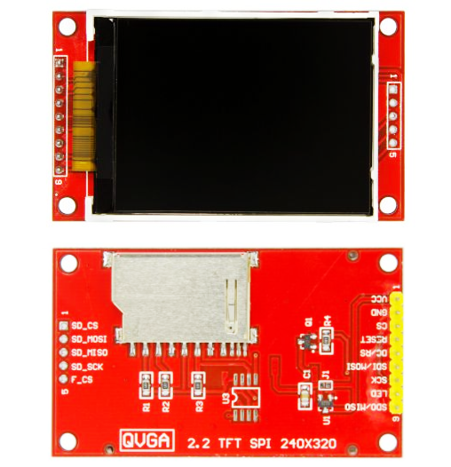
รูป: โมดูล 2.2" TFT LCD, 320 x 240 pixels, ILI9341
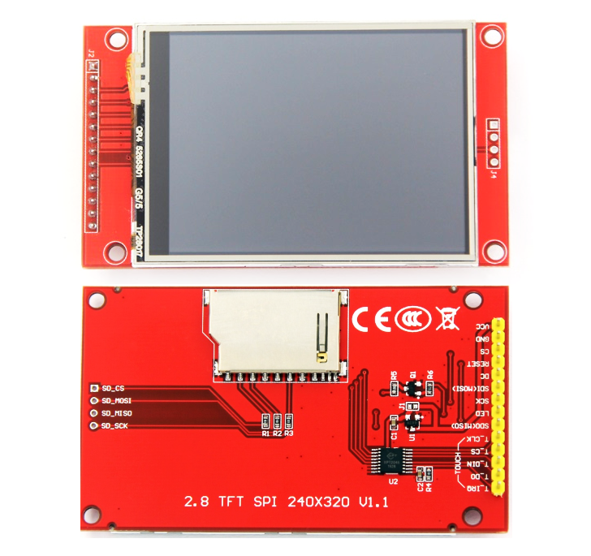
รูป: โมดูล 2.8" TFT LCD, 320 x 240 pixels, ILI9341 + Touchscreen IC (XPT2046)
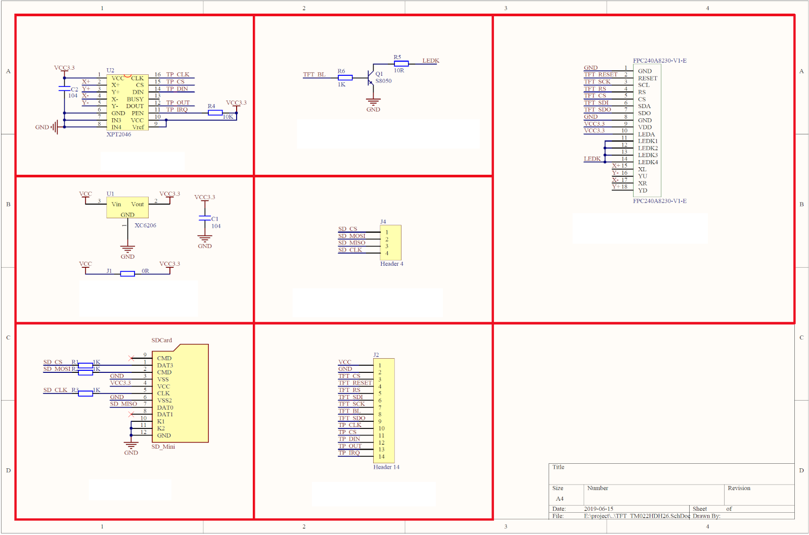
รูป: ตัวอย่างผังวงจรของโมดูล 2.8" TFT LCD, 320 x 240 pixels, ILI9341 + XPT2046
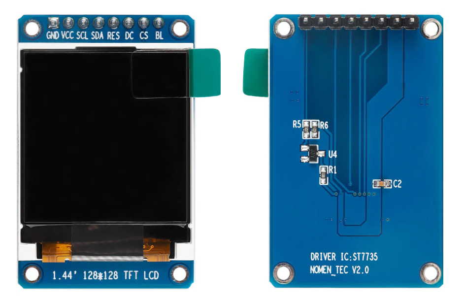
รูป: โมดูล 1.44" TFT LCD, 128 x 128 pixels, ST7735S
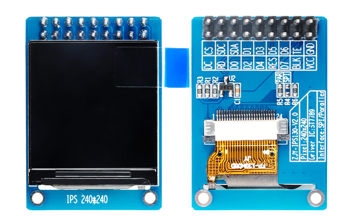
รูป: โมดูล 1.3" IPS LCD, 240 x 240 pixels, ST7789 (SPI/8-bit parallel)
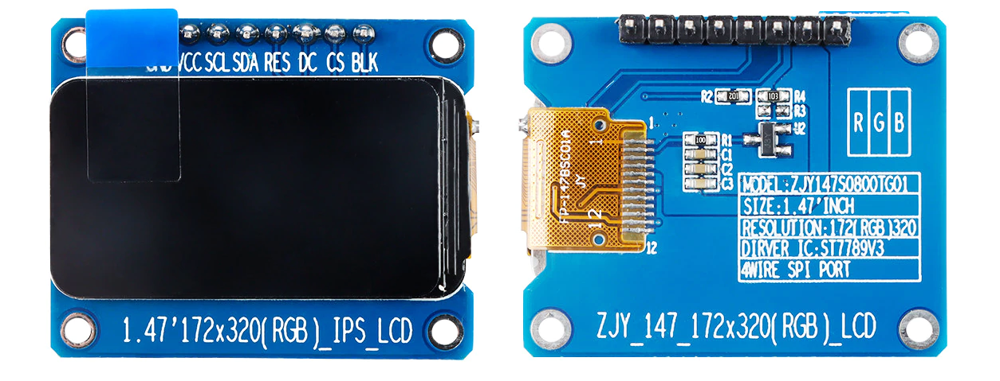
รูป: โมดูล 1.47" IPS LCD, 172x240 pixels, ST7789
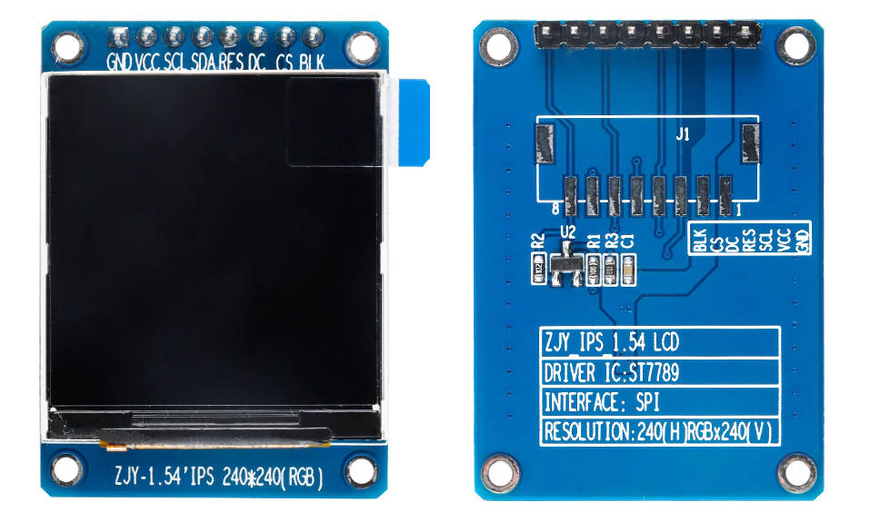
รูป: โมดูล 1.54" IPS LCD, 240x240 pixels, ST7789
ตัวอย่างการจัดเรียงขาของโมดูล 1.3" IPS LCD (ST7789, 240x240 pixels, SPI) เช่น
- GND ขา Ground ของระบบ
- VCC ขาแรงดันไฟเลี้ยง +3.3V
- SCL ขาสำหรับสัญญาณ SPI SCK (Clock)
- SDA ขาสำหรับสัญญาณ SPI MOSI (Data)
- RES ขาสำหรับรีเซตการทำงานของตัวชิปควบคุม (Active-low)
- DC ขาสำหรับเลือกว่าข้อมูลที่ส่งไปเป็น Data หรือ Command (Low: Command, High: Data)
- BLK ขาสำหรับควบคุมแรงดันไฟเลี้ยง Backlight เช่น มีการใช้วงจรทรานซิสเตอร์ควบคุมการจ่ายกระแสให้ Backlight LED (ถ้าต่อขานี้ไปยัง GND จะปิดการทำงานของ Backlight)
ไลบรารีสำหรับการเขียนโปรแกรมด้วย Arduino ได้แก่
- https://github.com/adafruit/Adafruit_ILI9341
- https://github.com/adafruit/Adafruit-ST7735-Library
- https://github.com/Bodmer/TFT_eSPI
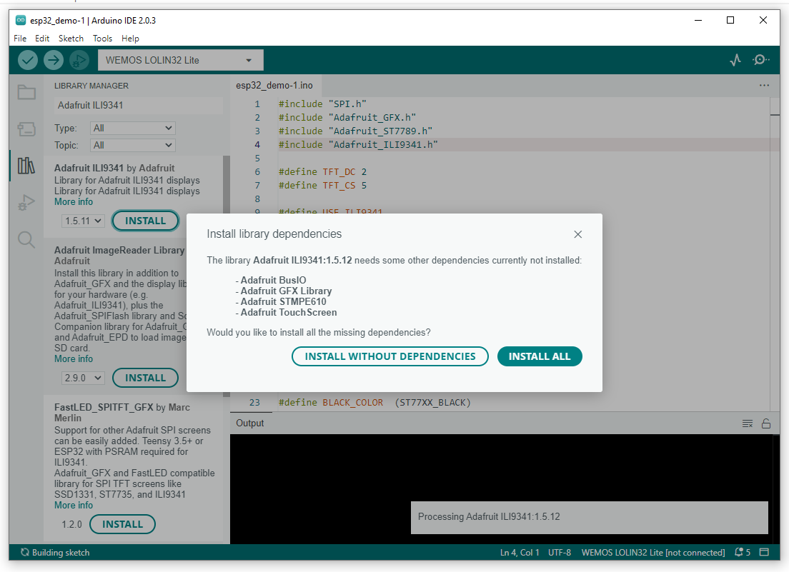
รูป: ตัวอย่างการติดตั้งไลบรารี Adafruit ILI9341 และไลบรารีที่เกี่ยวข้อง (Dependencies) สำหรับ Arduino IDE
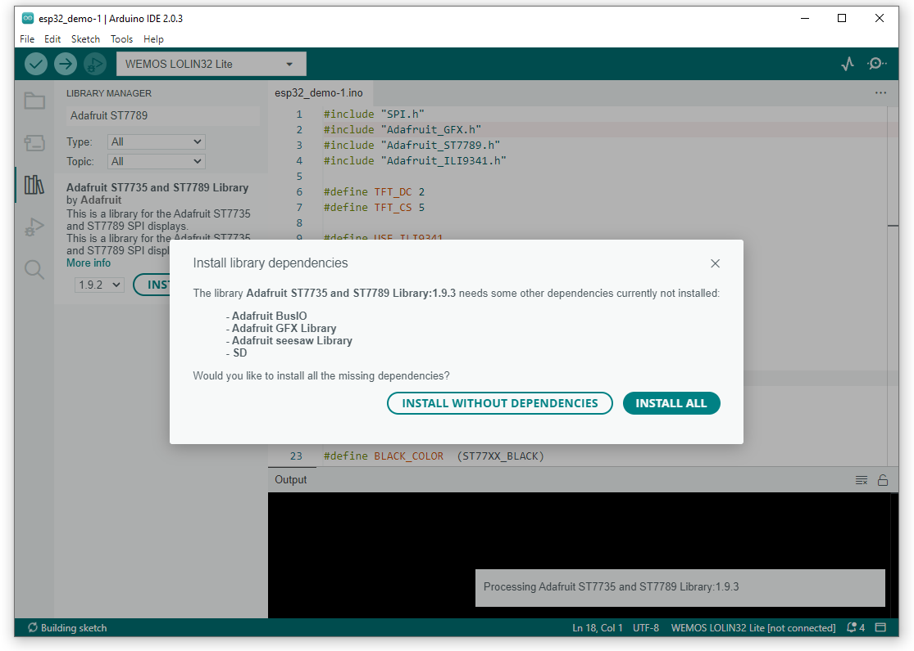
รูป: ตัวอย่างการติดตั้งไลบรารี Adafruit ST7789 สำหรับ Arduino IDE
▷ โค้ดสาธิตการใช้งาน TFT LCD โดยใช้ไลบรารีของ Adafruit#
ตัวอย่างโค้ดต่อไปนี้สาธิตการเขียนโปรแกรมด้วย Arduino-ESP32 ร่วมกับไลบรารีของบริษัท Adafruit
เพื่อใช้งานโมดูล TFT LCD ที่มีการเชื่อมต่อด้วย VSPI แบ่งเป็น 2 กรณีคือ
โมดูลที่ใช้ชิปควบคุม ST7789 และ ILI9341 อย่างใดอย่างหนึ่ง
// Date: 2022-12-26
// Demo board: WeMos Lolin32 Lite
#include "SPI.h"
#include "Adafruit_GFX.h"
#include "Adafruit_ST7789.h"
// https://github.com/adafruit/Adafruit-ST7735-Library/
#include "Adafruit_ILI9341.h"
// https://github.com/adafruit/Adafruit_ILI9341
#define TFT_DC (2)
#define TFT_RES (4)
#define TFT_CS (15)
// SCK / SCK -> GPIO 18
// SDA / MOSI -> GPIO 23
//#define USE_ST7789
#define USE_ILI9341
#ifdef USE_ILI9341
#define BLACK_COLOR (ILI9341_BLACK)
#define RED_COLOR (ILI9341_RED)
#define GREEN_COLOR (ILI9341_GREEN)
#define SCREEN_WIDTH (ILI9341_TFTWIDTH)
#define SCREEN_HEIGHT (ILI9341_TFTHEIGHT)
Adafruit_ILI9341 tft = Adafruit_ILI9341(TFT_CS, TFT_DC, TFT_RES);
#endif
// 1.3" IPS TFT screen, 240x240, no CS pin
#ifdef USE_ST7789
#define BLACK_COLOR (ST77XX_BLACK)
#define RED_COLOR (ST77XX_RED)
#define GREEN_COLOR (ST77XX_GREEN)
#define SCREEN_WIDTH (240)
#define SCREEN_HEIGHT (240)
Adafruit_ST7789 tft = Adafruit_ST7789(TFT_CS, TFT_DC, TFT_RES);
#endif
// Set the SPI frequency (Hz)
// Note: The default frequency is 32 MHz.
// See: SPI_DEFAULT_FREQ defined in /Adafruit_ST77xx.cpp
#define SPI_SPEED (15000000)
void drawCentreString(const char *buf, int xpos, int ypos) {
int16_t _x, _y;
uint16_t _w, _h;
tft.getTextBounds(buf, xpos, ypos, &_x, &_y, &_w, &_h);
tft.setCursor( xpos + (tft.width() - _w)/2, ypos + _h/2 );
tft.print(buf);
}
void setup() {
#ifdef USE_ILI9341
tft.begin();
#endif
#ifdef USE_ST7789
// Initialize the IPS LCD, use 240x240 pixels, SPI Mode 2
tft.init(SCREEN_WIDTH, SCREEN_HEIGHT, SPI_MODE2);
// Set TFT SPI frequency
tft.setSPISpeed(SPI_SPEED);
// Rotate 180 degree
tft.setRotation(2);
#endif
}
void loop() {
tft.fillScreen(BLACK_COLOR);
delay(1000);
tft.setTextColor(RED_COLOR);
tft.setTextSize(4);
drawCentreString( "IPS LCD", 0, 20 );
tft.setTextColor(GREEN_COLOR);
tft.setTextSize(3);
drawCentreString( "Arduino", 0, 90 );
drawCentreString( "ESP32", 0, 120 );
delay(2000);
}
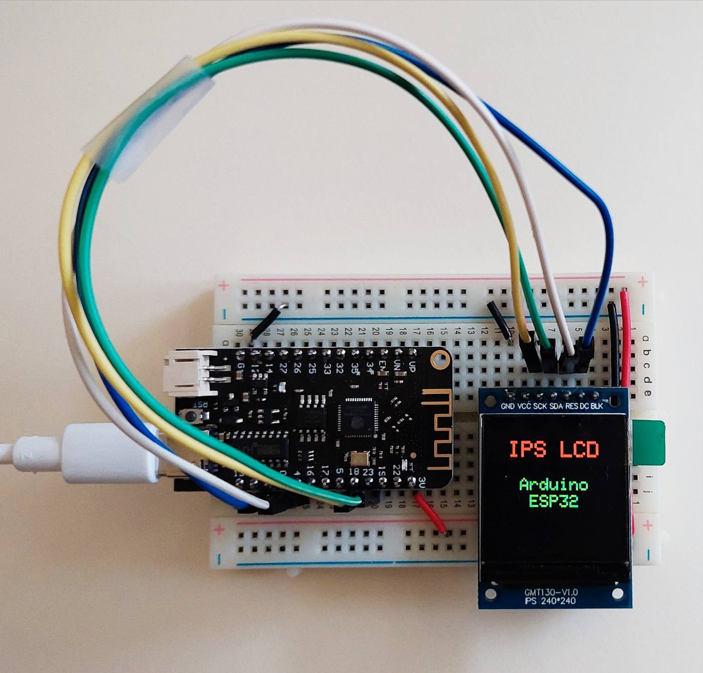
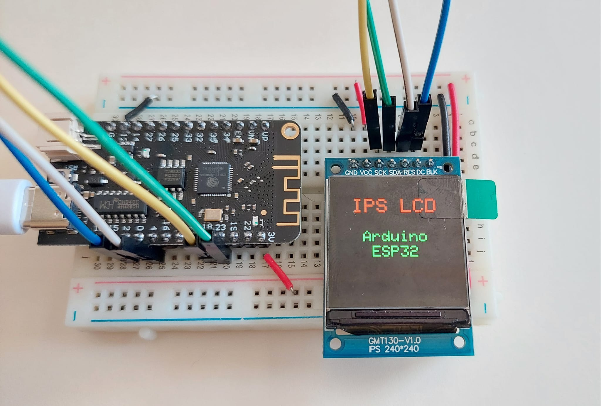
รูป: การต่อวงจรทดลองบนเบรดบอร์ด โดยใช้บอร์ด WeMos Lolin32 Lite และโมดูล 1.3" IPS LCD, 240x240 pixels, ST7789 Driver (ใช้แรงดันไฟเลี้ยง +3.3V)
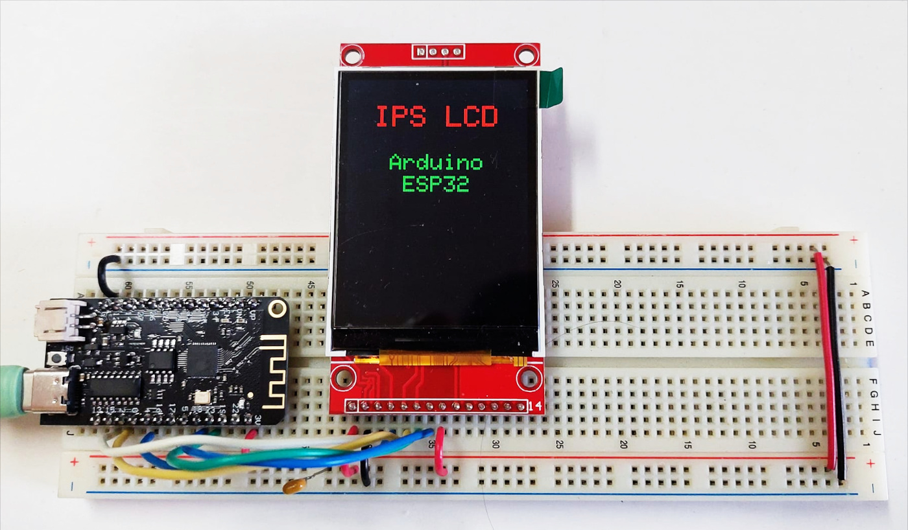
รูป: การต่อวงจรทดลองบนเบรดบอร์ด โดยใช้บอร์ด WeMos Lolin32 Lite และโมดูล 2.4" TFT LCD, 320x240 pixels, ILI9341 Driver (ใช้แรงดันไฟเลี้ยง +3.3V สำหรับขา VCC และขา LED)
▷ โค้ดสาธิตการใช้งาน TFT LCD โดยใช้ไลบรารี TFT_eSPI#
ถัดไปเป็นตัวอย่างการเขียนโค้ดโดยใช้ไลบรารี TFT_eSPI สำหรับ Arduino
ดังนั้นจะต้องมีการติดตั้งไลบรารีดังกล่าวสำหรับ Arduino IDE ให้พร้อมใช้งานก่อน
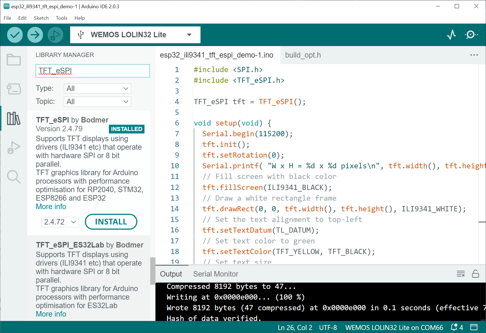
รูป: การติดตั้งไลบรารี TFT_eSPI สำหรับ Arduino
โค้ดตัวอย่างมีดังนี้ (แสดงข้อความหนึ่งบรรทัดตรงกลางจอภาพ)
#include <SPI.h>
#include <TFT_eSPI.h>
TFT_eSPI tft = TFT_eSPI();
void setup(void) {
Serial.begin(115200);
tft.init();
tft.setRotation(0);
Serial.printf( "W x H = %d x %d pixels\n", tft.width(), tft.height() );
// Fill screen with black color
tft.fillScreen(ILI9341_BLACK);
// Draw a white rectangle frame
tft.drawRect(0, 0, tft.width(), tft.height(), ILI9341_WHITE);
// Set the text alignment to top-left
tft.setTextDatum(TL_DATUM);
// Set text color to green
tft.setTextColor(TFT_YELLOW, TFT_BLACK);
// Set text size
tft.setTextSize(3);
// Get the width of the text in pixels
char *text = "ILI9341 LCD";
int16_t text_width = tft.textWidth(text);
// Draw the text on the display
tft.drawString( text, (tft.width() - text_width)/2, tft.height()/2 );
}
void loop() {
delay(10);
}
นอกจากไฟล์ Arduino Sketch (.ino) แล้ว จะต้องมีการสร้างไฟล์ build_opt.h
ในไดเรกทอรีเดียวกันกับไฟล์ Arduino Sketch
เพื่อใช้ในการกำหนดหรือตั้งค่าการใช้งานสำหรับไลบรารี TFT_eSPI ซึ่งในกรณีตัวอย่างนี้ จะนำไปใช้กับโมดูล
ILI9341 TFT LCD (240x320) และไม่มีชิป Touch Screen
ข้อความในไฟล์ build_opt.h มีดังนี้
-DUSER_SETUP_LOADED=1
-DILI9341_DRIVER
-DTFT_WIDTH=240
-DTFT_HEIGHT=320
-DTFT_MOSI=23
-DTFT_SCLK=18
-DTFT_CS=15
-DTFT_DC=2
-DTFT_RST=4
-DTFT_BL=-1
-DLOAD_GLCD=1
-DSPI_FREQUENCY=24000000
▷ การจำลองการทำงานของบอร์ด ESP32 และโมดูล ILI9341 TFT LCD#
หากต้องการจำลองการทำงานของโมดูล ILI9341 TFT LCD และเขียนโค้ด Arduino Sketch สำหรับบอร์ด ESP32 โดยใช้ Wokwi Simulator ก็สามารถทำได้เช่นกัน ตามตัวอย่างดังนี้
ในส่วนที่เรียกว่า Library Manager ของ Wokwi Simulator จะต้องมีการเพิ่มรายการไลบรารี (Project Libraries) สำหรับ Arduino Project ที่ต้องการใช้งานด้วย (ใส่ชื่อแต่ละไลบรารีต่อหนึ่งบรรทัด) เช่น
# Wokwi Library List
Adafruit GFX Library
Adafruit ILI9341
Adafruit ST7735 and ST7789 Library
TFT_eSPI
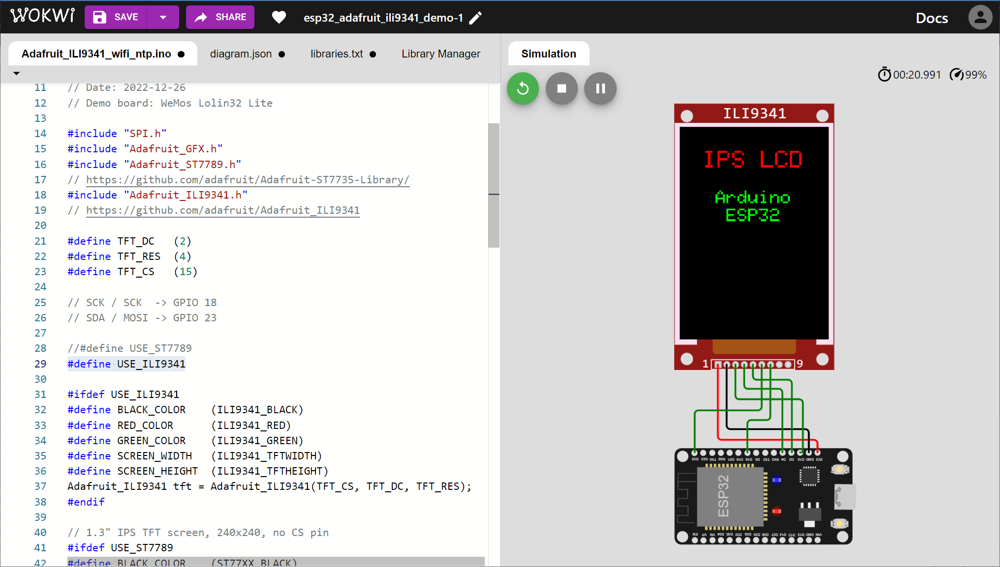
รูป: ตัวอย่างการจำลองการทำงาน (ใช้ไลบรารี Adafruit_ILI9341 ในการเขียนโค้ด)
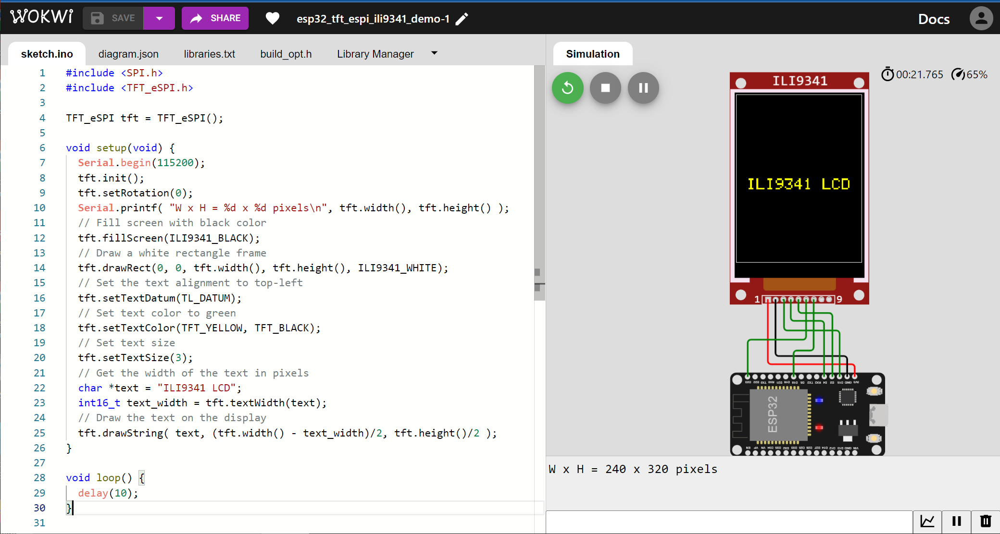
รูป: ตัวอย่างการจำลองการทำงาน (ใช้ไลบรารี TFT_eSPI ในการเขียนโค้ด)
▷ กล่าวสรุป#
บทความนี้นำเสนอการใช้งานโมดูล TFT LCD ในเบื้องต้น และการเขียนโปรแกรม Arduino สำหรับการเชื่อมต่อกับบอร์ดไมโครคอนโทรลเลอร์ ESP32 โดยใช้บัส SPI และขา GPIO
บทความที่เกี่ยวข้อง
This work is licensed under a Creative Commons Attribution-ShareAlike 4.0 International License.
Created: 2022-12-25 | Last Updated: 2022-12-29